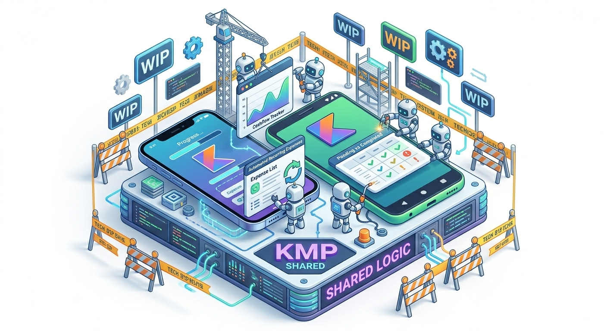
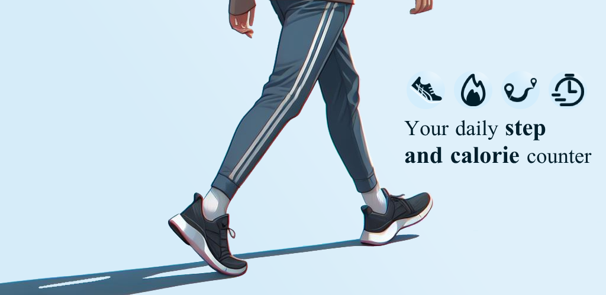
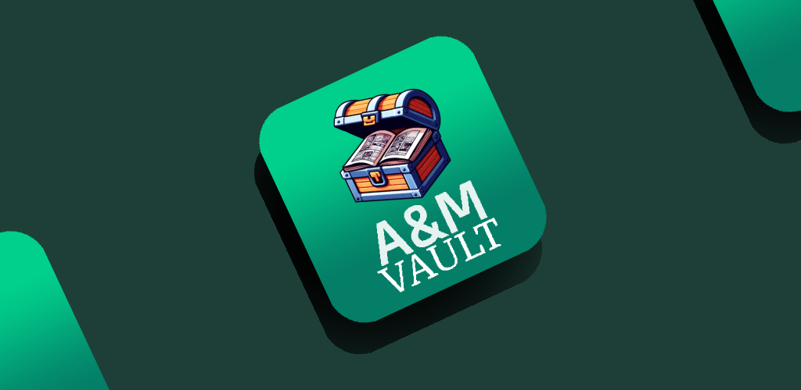

Sergio Mateo Moreno
Android & Backend Developer
Lo que si tengo
- Años de experiencia autodidacta
- Capacidad de autoaprendizaje
- Cultura de esfuerzo
- Gestión de la presión
- Autonomía y resolución
- Pensamiento lógico y analítico
- Tolerancia a la frustración
- Atención al detalle
- Compromiso profesional
Lo que no tengo
- Años de experiencia profesional en IT
- Un camino fácil
- Miedo al error
- Resistencia al cambio
- Excusas frente a los problemas
Proyectos Backend
Proyectos Android

Nexflow KMP(En desarrollo)
Implementa Nexflow API.
Es una aplicación de
gestión financiera
personal centrada en el control
del flujo de caja (Cashflow) y la visibilidad de compromisos económicos. Pone el foco en
el estado de las transacciones
y en la automatización de gastos recurrentes, permitiendo al
usuario tener una imagen fiel de su patrimonio real y sus deudas activas.

StepWise
StepWise es una aplicación de seguimiento de actividad física que cuenta automáticamente los pasos, calcula las calorías, registra la distancia y el tiempo de caminata. Permite establecer objetivos diarios de pasos personalizados y proporciona informes intuitivos con gráficos de progreso detallados.

A&MVault
La aplicación A&MVault es una herramienta práctica para los aficionados al manga y al anime que desean llevar un registro de sus series favoritas. Con esta aplicación, los usuarios pueden marcar los títulos de manga y anime como "siguiendo", "completados", "en espera" y más, lo que les permite organizar su progreso de lectura y visualización.
Experiencia
Desarrollador Android
- Implementé el consumo de APIs RESTful con Retrofit, gestionando la seguridad por tokens y el manejo centralizado de excepciones de red.
- Optimicé el acceso a la información y el rendimiento de la aplicación mediante el diseño de una capa de caché local con Room.
- Gestioné la persistencia de datos y la sincronización automática para asegurar el funcionamiento óptimo de la app en modo offline.
- Estructuré el sistema bajo Clean Architecture y principios SOLID para garantizar un código modular, testeable y escalable.
Desarrollador Android
- Integré Firebase Authentication para gestionar flujos de seguridad y sesiones de usuario de forma eficiente.
- Modelé y gestioné la persistencia de datos en bases de datos NoSQL utilizando Firestore para el almacenamiento de información.
- Configuré la actualización de información en tiempo real y el manejo de persistencia nativa fuera de línea para mejorar la experiencia de usuario.
- Desarrollé flujos de navegación complejos aplicando inyección de dependencias para facilitar el mantenimiento y la testabilidad del sistema.
Formación
Grado Superior en Desarrollo de Aplicaciones Multiplataforma (DAM)
I.E.S. Padre José Miravent
Firebase para Android con Kotlin
Appcademy (Aristidevs)
Jetpack Compose
Appcademy (Aristidevs)
Kotlin Multiplatform & Compose Multiplatform
Appcademy (Aristidevs)